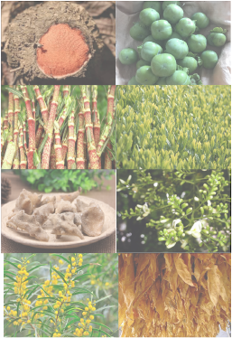
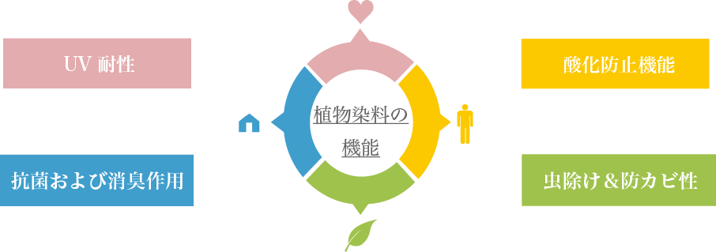
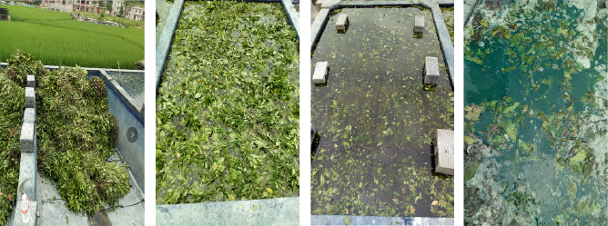
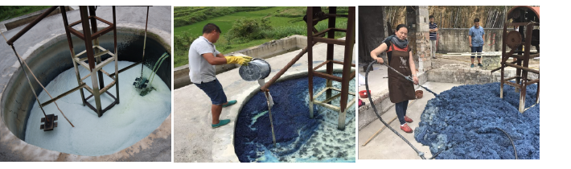
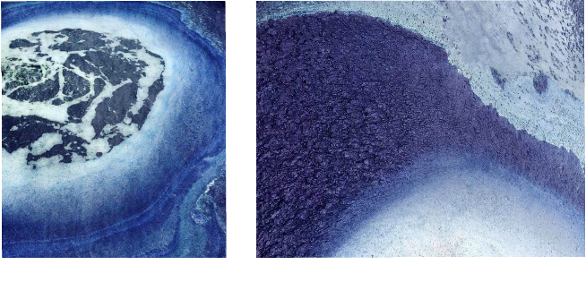

※Botanical MSB Natrual DyeはMysunbio様が提供するオリジナル染色技法です。
ワールドシルバーはMysunbio様と提携して植物を使用した染色を
メインのテーマとして取り組んで行きたいと思っています。
メインのテーマとして取り組んで行きたいと思っています。
- Botanical MSB Natrual Dyeとは
天然の植物の根、茎、花、葉、果物、皮、乾燥材料などを原料として使用して、植物染料を抽出し、
生地を生態学的に染色する技術です。
2008年以来、Mysunbio社の研究チームは、現代の科学技術を統合し、
伝統的な職人技に基づいて現代の科学的手法を適用してきました。1
0年以上の研究を重ねて、栗の殻、カメリアの殻、パッションフルーツ、
バフィカカンサス（Baphicacanthus）の茎などの一連の農林廃棄物を原材料として使用し、
藍染めのみに基づく伝統的な生産技術の限界を突破し、Mysunbio社が取得した生態系緑の抽出特許技術を採用して、
赤、黄、青、紫、緑、茶色などの植物染料の充足なセットの開発を実現しました。
- 植物染料の特徴
- メリット
原材料に漢方薬が多く、染色過程中に薬と香りの成分は色素とともに布地に吸収され、布地は抗菌抗炎性持つ

1 .植物色素は生物から抽出され、毒性がなく無害、アレルギーや発がん性がない
2 .分解しやすく、環境適合性が高い
3 .ソフトでエレガントな色が再現可能
- 植物染料の抽出
- 抽出したい色素を持つ植物を採取
- 酸化
- 藍色染料
ここで、藍の原料と染料になるまでのプロセスを紹介いたします。


